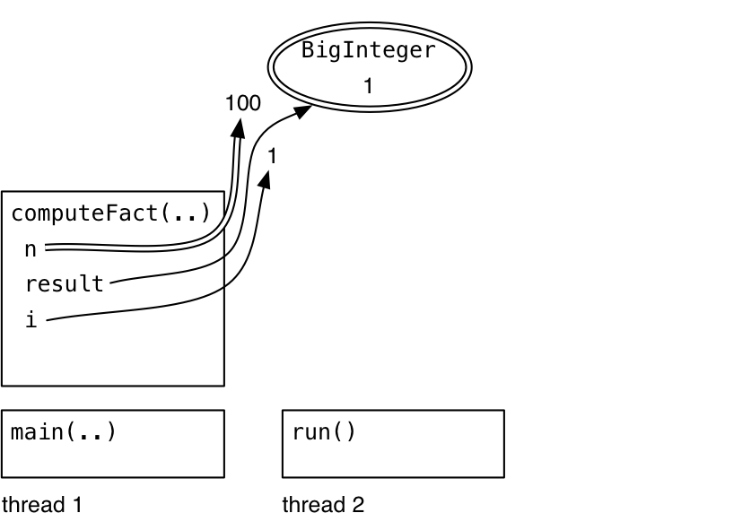
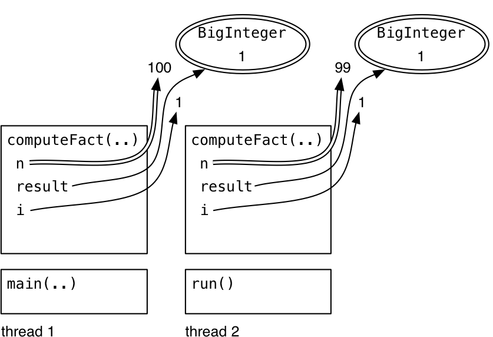
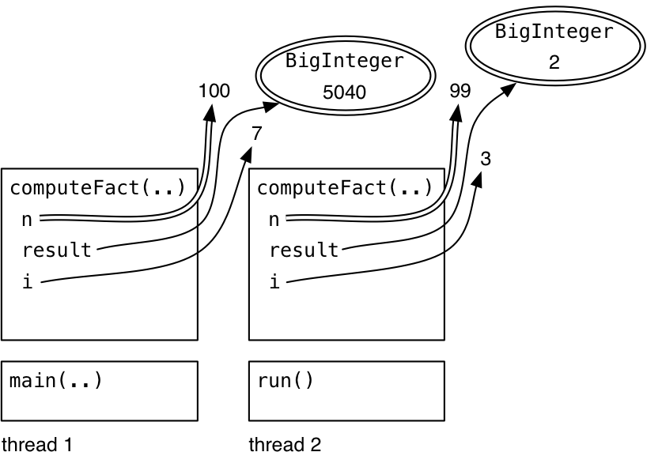
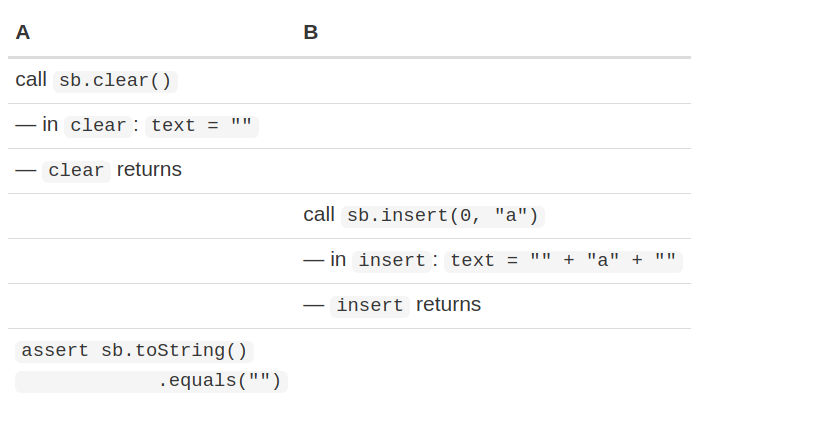

This is an easy-to-understand note for Reading 20: Thread Safety.
Exercises are very important, do not skip them. On the contrary, you can read this article in an exercises-driven way if you just want to review the key ideas.
Recall three key properties of a good software:
| Safety from bugs | Easy to understand | Ready for change |
|---|---|---|
| Correct today and correct in the unknown future. | Communicating clearly with future programmers, including future you. | Designed to accommodate change without rewriting. |
There are basically four ways to make variable access safe in the shared-memory concurrency:
- Confinement. Don’t share the variable between threads.
- Immutability. Make the shared data immutable. See Mutability & immutability, and we will discuss additional constraints for concurrent programming.
- Threadsafe data type: Encapsulate the shared data in an existing threadsafe data type that does the coordination for you.
- Synchronization: Use synchronization to keep the threads from accessing the variable at the same time.
First three ways will be discussed and illustrated to be threadsafe on your code.
The Fourth approach, synchronization, will be discussed in the next reading.
Basis: What Threadsafe means
A data type or static method is threadsafe if it behaves correctly when used form multiple threads, without the cooperation of the caller, regardless of how those threads are executed.
- “behaves correctly” means satisfying its specification and preserving its rep invariant
- “regardless of how threads are executed” means threads might be on multiple processors or timesliced on the same processor.
- “with additional coordination” means that the data type cannot put preconditions on its caller related to timing, like “you cannot call
get()whileset()is in progress.”
The Iterator is not threadsafe
The specification of remove() method says:
Removes from the underlying collection the last element returned by this iterator (optional operation). This method can be called only once per call to
next(). The behavior of an iterator is unspecified if the underlying collection is modified while the iteration is in progress in any way other than by calling this method.
Strategy 1: Confinement
You avoid races on mutable data by keeping that data confined to a single thread. Don’t give any other threads the ability to read or write the data directly.
public class Factorial { |
This code starts the thread for computeFact(99) with an anonymous Runnable, a common idiom discussed in the previous reading.
Step 1
start running main
Step 2
main creates new thread computeFact(99)
Step 3
one possibility: thread 1 enters computeFact.
Step 4
next thing might happen: thread 2 also enters computeFact.
Step 5
The computeFact computations proceed independently, updating their respective variables(confinement).
Avoid Global Variables
Unlike local variables, static variables are not automatically thread confined.
If you have static variables in your program, then you have to make an argument that only one thread will ever use them, and you have to document that fact clearly. Better, you should eliminate the static variables entirely.
// This class has a race condition in it. |
This class has a race in the getInstance() method – two threads could call it at the same time and end up creating two copies of the PinballSimulator object, which we don’t want.
To fix this race using the thread confinement approach, you would specify that only a certain thread (maybe the “pinball simulation thread”) is allowed to call PinballSimulator.getInstance(). The risk here is that Java won’t help you guarantee this.
// is this method threadsafe? |
The HashMap referenced by the static variable cache is shared by all calls to isPrime(), and HashMap is not threadsafe. If multiple threads mutate the map at the same time, by calling cache.put(), then the map can become corrupted in the same way that the bank account became corrupted in the last reading. You may get NullPointerException, IndexOutOfBoundsException, or quietly wrong answers.
Exercises
Factorial
public static void main(String[] args) { |
Possible interleavings
The call to computeFact(100) starts before the call to computeFact(99) startsThe call to computeFact(99) starts before the call to computeFact(100) starts
The call to computeFact(100) finishes before the call to computeFact(99) starts
The call to computeFact(99) finishes before the call to computeFact(100) starts
PinballSimulator
public class PinballSimulator { |
The code has a race condition that invalidates the invariant that only one simulator object is created.
Suppose thread 1 and thread 2 are running getInstance() and about to execute one of lines 1) to 3). Is it possible the invariant will be violated in following situations?
| Case | thread 1 | thread 2 |
|---|---|---|
| 1 | 1) | 3) |
| 2 | 1) | 2) |
| 3 | 1) | 1) |
Answer
Case 1: YesThe thread on line 3 has already assigned simulator, so the thread on line 1 will not enter the conditional. Right?
Unfortunately, that’s not correct. As we saw in the last reading, Java doesn’t guarantee that the assignment to simulator in one thread will be immediately visible in other threads; it might be cached temporarily. In fact, our reasoning is broken, and the invariant can still be violated.
Case 2: Yes
Case 3: Yes
Strategy 2: Immutability
Immutability tackles the shared-mutable-data cause of a race condition and solves it simply by making the shared data not mutable.
Final variables are immutable references, and we still have to argue that the object the variable points to is immutable.
Immutable objects are usually also threadsafe. We say “usually” here because our current definition of immutability is too loose for concurrent programming. We’ve said that a type is immutable if an object of the type always represents the same abstract value for its entire lifetime. But that actually allows the type the freedom to mutate its rep, as long as those mutations are invisible to clients. We’ve seen several examples of this notion, called beneficent mutation. Caching, lazy computation, and data structure rebalancing are typical kinds of beneficent mutation.
For concurrency, though, this kind of hidden mutation is not safe. An immutable data type that uses beneficent mutation will have to make itself threadsafe using locks (the same technique required of mutable data types), which we’ll talk about in a future reading.
Stronger definition of immutability
A stronger definition of immutability:
- no mutator methods
- all fields are private and final
- no representation exposure
- no mutation whatsoever of mutable objects in the rep – not even beneficent mutation
Exercise
Suppose you’re reviewing an abstract data type which is specified to be immutable, to decide whether its implementation actually is immutable and threadsafe.
Which of the following elements would you have to look at?
Answer
fields ✓ to make sure they’re private and final. creator implementations ✓ to make sure that a reference to a mutable object passed in from a client isn’t being stored in the rep. client calls to creators ⨯ producer implementations ✓ same as above client calls to producers ⨯ observer implementations ✓ to make sure not returning a reference to a mutable object in the rep. client calls to observers ⨯ mutator implementations ✓ an ostensibly-immutable ADT shouldn’t have any mutators. client calls to mutators ⨯
Strategy 3: Using Threadsafe Data Types
[StringBuffer is] A thread-safe, mutable sequence of characters. A string buffer is like a String, but can be modified. At any point in time it contains some particular sequence of characters, but the length and content of the sequence can be changed through certain method calls.
String buffers are safe for use by multiple threads. The methods are synchronized where necessary so that all the operations on any particular instance behave as if they occur in some serial order that is consistent with the order of the method calls made by each of the individual threads involved.
[StringBuilder is] A mutable sequence of characters. This class provides an API compatible with StringBuffer, but with no guarantee of synchronization. This class is designed for use as a drop-in replacement for StringBuffer in places where the string buffer was being used by a single thread (as is generally the case). Where possible, it is recommended that this class be used in preference to StringBuffer as it will be faster under most implementations.
Threadsafe Collections
The collection interfaces in Java – List, Set, Map – have basic implementations that are not threadsafe. The implementations of these that you’ve been used to using, namely ArrayList, HashMap, and HashSet, cannot be used safely from more than one thread.
Fortunately, just like the Collections API provides wrapper methods that make collections immutable, it provides another set of wrapper methods to make collections threadsafe, while still mutable.
These wrappers effectively make each method of the collection atomic with respect to the other methods. An atomic action effectively happens all at once – it doesn’t interleave its internal operations with those of other actions, and none of the effects of the action are visible to other threads until the entire action is complete, so it never looks partially done.
private static Map<Integer,Boolean> cache = |
Don’t circumvent the wrapper. Make sure to throw away references to the underlying non-threadsafe collection, and access it only through the synchronized wrapper. new HashMap<>() is passed directly and never stored.
Iterators are still not threadsafe. You can’t use iterator(), or the for loop syntax:
for (String s: lst) { ... } // not threadsafe, even if lst is a synchronized list wrapper |
The solution to this iteration problem will be to acquire the collection’s lock when you need to iterate over it, which we’ll talk about in a future reading.
Finally, atomic operations aren’t enough to prevent races: the way that you use the synchronized collection can still have a race condition. Consider this code, which checks whether a list has at least one element and then gets that element:
if ( ! lst.isEmpty()) { String s = lst.get(0); ... } |
Even if you make lst into a synchronized list, this code still may have a race condition, because another thread may remove the element between the isEmpty() call and the get() call.
Even the isPrime() method still has potential races:
if (cache.containsKey(x)) return cache.get(x); |
The synchronized map ensures that containsKey(), get(), and put() are now atomic, so using them from multiple threads won’t damage the rep invariant of the map. But those three operations can now interleave in arbitrary ways with each other, which might break the invariant that isPrime needs from the cache: if the cache maps an integer x to a value f, then x is prime if and only if f is true. If the cache ever fails this invariant, then we might return the wrong result.
So we have to argue that the races between containsKey(), get(), and put() don’t threaten this invariant.
- The race between
containsKey()andget()is not harmful because we never remove items from the cache – once it contains a result for x, it will continue to do so. - There’s a race between
containsKey()andput(). As a result, it may end up that two threads will both test the primeness of the samexat the same time, and both will race to callput()with the answer. But both of them should callput()with the same answer, so it doesn’t matter which one wins the race – the result will be the same.
The need to make these kinds of careful arguments about safety(even when you’re using threadsafe data types) is the main reason that concurrency is hard.
Exercise
public class Building { |
A: Which of these variables refer to a value of a threadsafe data type?
Answer
buildingName ✓ immutable |
B: Which of these variables are safe for use by multiple threads?
Answer
threadsafe and final |
C: Which of these variables cannot be involved in any race condition?
Answer
buildingName ✓ |
How to Make a Safety Argument
Make an explicit argument that it’s free from races, and write it down: confinement, immutability, threadsafe data types, or synchronization. When you use the last two, you also need to argue that all accesses to the data are appropriately atomic, which means that the invariants you depend on are not threatened by interleaving. We gave one of those arguments for isPrime above.
Thread Safety Arguments for Data Types
Confinement is not usually an option when we’re making an argument just about a data type: you have to know what threads exist in the system and what objects they’ve been given access to. Usually we use confinement at a higher level, talking about the system as a whole and arguing why we don’t need thread safety for some of our modules or data types, because they won’t be shared across threads by design.
Immutability:
/** MyString is an immutable data type representing a string of characters. */ |
More care in the argument:
/** MyString is an immutable data type representing a string of characters. */ |
As long as it doesn’t threaten the MyString’s immutability, however, we can be confident that it won’t threaten the thread safety.
Bad Safety Arguments
/** MyStringBuffer is a threadsafe mutable string of characters. */ |
String is indeed immutable and threadsafe; but the rep pointing to that string, specifically the text variable, is not immutable. text is not a final variable, and in fact it can’t be final in this data type, because we need the data type to support insertion and deletion operations. So reads and writes of the text variable itself are not threadsafe . This argument is false.
public class Graph { |
Graph relies on other threadsafe data types to help it implement its rep – specifically the threadsafe Set and Map wrappers that we talked about above. That prevents some race conditions, but not all, because the graph’s rep invariant includes a relationship between the node set and the edge map. All nodes that appear in the edge map also have to appear in the node set. So there may be code like this:
public void addEdge(Node from, Node to) { |
This code has a race condition in it. There is a crucial moment when the rep invariant is violated, right after the edges map is mutated, but just before the nodes set is mutated. Another operation on the graph might interleave at that moment, discover the rep invariant broken, and return wrong results.
Even though the threadsafe set and map data types guarantee that their own add() and put() methods are atomic and noninterfering, they can’t extend that guarantee to interactions between the two data structures. So the rep invariant of Graph is not safe from race conditions. Just using immutable and threadsafe-mutable data types is not sufficient when the rep invariant depends on relationships between objects in the rep.
Exercise
bad safety argument
/** MyStringBuffer is a threadsafe mutable string of characters. */ |
Which of these methods are counterexamples to the buggy safety argument, because they have a race condition?
In particular, you should mark method A as a counterexample if it’s possible that, if one thread is running method A at the same time as another thread is running some other method, some interleaving would violate A’s postcondition:
Answer
toUpperCase & toString may fail if clear interleaves at the wrong moment |
Serializability
Strat: sb = “z”;
Thread A’s assertion will fail, but not because clear violated its postcondition. Indeed, when all the code in clear has finished running, the postcondition is satisfied.
A has not anticipated possible interleaving between clear() and the assert.
The results are consistent with some sequential ordering of the calls. In this case, clearing and inserting, that means either clear-followed-by-insert, or insert-followed-by-clear.
Summary
- Confinement: not sharing the data.
- Immutability: sharing, but keeping the data immutable.
- Threadsafe data types: storing the shared mutable data in a single threadsafe datatype.
These ideas connect to our three key properties of good software as follows:
Safe from bugs. We’re trying to eliminate a major class of concurrency bugs, race conditions, and eliminate them by design, not just by accident of timing.
Easy to understand. Applying these general, simple design patterns is far more understandable than a complex argument about which thread interleavings are possible and which are not.
Ready for change. We’re writing down these justifications explicitly in a thread safety argument, so that maintenance programmers know what the code depends on for its thread safety.